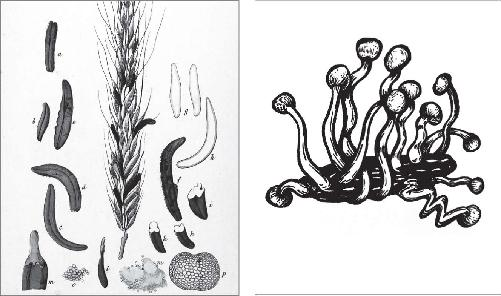
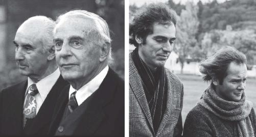

The hunt for the psychedelic origins of Western civilization has to begin with Eleusis. It was one of the oldest religious traditions of Ancient Greece and arguably the most famous. But timing is everything. Forty years ago the Classics establishment was in no position to seriously consider the controversial marriage of the Mysteries and drugs. Let alone the possibility that the earliest Christians inherited a visionary sacrament from their Greek ancestors. The one scholar who dared to question everything paid dearly for his original sin. A total pariah, he spies signs of redemption from a new generation of archaeologists and scientists. But the excommunication has been long and lonely.
It all started back in April 1978. Alarm bells were sounding from the towers of academia, as a motley crew of three misfits announced the unthinkable. The code had been cracked. What religious historian Huston Smith called history’s “best-kept secret” was a secret no more. After centuries of false leads and dead ends, the unlikely team had finally breached the inner sanctum of the Mysteries of Eleusis. They had discovered what really made the Ancient Greeks tick. At long last they had unearthed the true source of our ancestors’ poetry and philosophy. Perhaps the hidden inspiration behind the world as we know it. And the answer, they were quite assured, was a magic potion full of psychedelic drugs.
“As perverse as it is unconvincing will be the verdict of many,” began one scathing review of The Road to Eleusis: Unveiling the Secret of the Mysteries. In a single paragraph, the learned critic quickly put the matter to rest, closing with a stiff punch: “Everything is wildly out of hand.”1
Whenever you accuse the founders of Western civilization of getting stoned out of their minds, and then turning that hallucinatory event into their most cherished religion, a little pushback is to be expected. But the authors of the inflammatory charge couldn’t have chosen a worse moment in American history to publish their findings. While most of the excess and hysteria of the 1960s had simmered down, the War on Drugs was just heating up. In a national press conference on June 17, 1971, President Nixon had stood before the cameras and declared drugs “public enemy number one,” vowing “to wage a new, all-out offensive” across the country and around the world.2 Drugs were scapegoated as a real and present danger—of greater concern, apparently, than the Soviet Union and the prospect of nuclear holocaust. Soon the fugitive LSD evangelist and countercultural guru, Timothy Leary, was “the most dangerous man in America.”3
By the late 1970s, before the Reagan administration and the “Just Say No” campaign of my youth put crack, cocaine, and heroin in the crosshairs, psychedelic drugs had endured a decade in the media spotlight.4 Of all the ways to fry your brain, nothing beat psychedelics. For a brief time “insanity due to LSD” became a popular criminal defense.5 Not only was the drug seen as the chief threat to our public health and safety but also as the ultimate escape from reality. It was utter madness to suggest that these hazardous, potentially lethal compounds were the long-sought missing key to the Mysteries.
Even if the misfits offended the academic mainstream with their “perverse” hypothesis, it wasn’t for lack of homework. In The Road to Eleusis, Gordon Wasson, Albert Hofmann, and Carl Ruck made a passionate and detailed argument for why the kukeon, the sacramental beverage of the Mysteries, must have been spiked with one or more psychedelics. And they did so in truly interdisciplinary fashion, which was basically unheard of in the stodgy field of Classics at the time.
Wasson was a J.P. Morgan banker turned amateur mushroom hunter. Or ethnomycologist, as he would prefer to be called—one who studies the relationship between people and fungi. His global anthropological fieldwork had convinced him that magic mushrooms played a pivotal role in the origin and development of humanity’s spiritual awareness. It was one mind-bending experience, in particular, that sealed the deal.
In the heart of the Sierra Mazateca, a traditional healer or curandera by the name of Maria Sabina had agreed to guide Wasson on a healing journey, an initiation no outsider had ever attempted. Wasson was fixated on capturing the undocumented ceremony. At 10:30 p.m. one evening in 1955, he finally got the okay. According to custom, Maria cleansed and blessed some fresh Psilocybe mexicana that Wasson had handpicked earlier in the day. She instructed him to consume six of the mushrooms, which would flood his system with the psychoactive agent psilocybin. After a half hour of deafening silence amid total blackness, the adventure finally began.
Over the course of the next five hours, Wasson recalled, “the visions came whether our eyes were open or closed.” He saw everything from “resplendent palaces all laid over with semiprecious stones” to “a mythological beast drawing a regal chariot.” At one point he witnessed his spirit leave his body and shoot to the heavens. Oddly, the whole trip was seared into Wasson’s memory as the realest thing he’d ever experienced. He recorded his grand epiphany in an article entitled “Seeking the Magic Mushroom.” It would appear in the May 13, 1957, issue of Life magazine:
The visions were not blurred or uncertain. They were sharply focused, the lines and colors being so sharp that they seemed more real to me than anything I had ever seen with my own eyes. I felt that I was now seeing plain, whereas ordinary vision gives us an imperfect view; I was seeing the archetypes, the Platonic ideas, that underlie the imperfect images of everyday life.… The thought crossed my mind: could the divine mushrooms be the secret that lay behind the Ancient Mysteries? 6
A well-read individual, Wasson was very familiar with the testimony from Eleusis. He instantly identified with the ancient initiates, absolutely certain he had stumbled upon something that brought incredible meaning to our ancestors, but had somehow escaped the attention of modern scholars. How an echo of the Greek ritual had survived in the mountains of Mexico became a burning question that Wasson would dedicate the rest of his life to answering. In the meantime, however, the more immediate concern was having Maria Sabina’s mushrooms scientifically catalogued. He sent some spores to Switzerland to be cultivated by his friend and future coauthor.
Albert Hofmann was already an internationally renowned chemist. In 1938 he had struck psychedelic gold at his research laboratory in Basel by extracting LSD from special cultures of ergot, a naturally occurring fungus. From Wasson’s samples Hofmann was able to successfully isolate psilocybin as well, laying the groundwork for the experiments at Hopkins and NYU in recent years. Together, Wasson and Hofmann would unwittingly spark the pop-psychedelic revolution that was to come, thanks in no small part to Aldous Huxley and his eloquent marketing in The Doors of Perception. Millions of people would read Wasson’s essay in Life; tens of millions would see him on the CBS news program Person to Person.7 By the early 1960s hippies and beatniks were hopping down to Mexico to get their own taste of some Maria Sabina–style expansion of consciousness. Everyone from Bob Dylan to Led Zeppelin to the Rolling Stones is rumored to have followed in Wasson’s footsteps.8
But it wasn’t until July 1975, a full twenty years after his flash of insight in Mexico, that Wasson formally enlisted Hofmann to expose the mystery of the Mysteries once and for all. They had as good a chance as anybody else. In the absence of any hard data, all kinds of bizarre theories were put forward over the years. In the mid-nineteenth century, the great German classicist Ludwig Preller proposed that Eleusis was nothing more than an elaborate theatrical performance, complete with hymns, sacred dances, and stage props. By the late nineteenth century, Percy Gardner, professor of archaeology at the University of Cambridge, swore puppets were involved, “some perhaps of considerable size and fitted to impress the awakened nerves of the auditors.”9 That sublime vision reported by Plato, Pindar, and Sophocles? Nothing but smoke and mirrors. And Muppets. Under the right conditions, the imagination runs wild.
By the early twentieth century, the British classicist Jane Ellen Harrison struck a chord that would echo for decades to come. She saw Eleusis as a primitive fertility rite, a crude form of sympathetic magic. To ensure a proper harvest the initiate would undergo a long process of purification and fasting before partaking of the first fruits.10 In this case it was barley grains, the principal ingredient of the kukeon. Like prehistoric folk before them, the Greeks would have abstained from the fruit of the fields until they were ripe and ready. At a harvest festival like the Mysteries, that taboo was apparently broken. The very first taste of the freshly cut crop “would easily come to be regarded as specially sacred and as having sacramental virtue.”11 Thus Harrison understood the kukeon as a ritualized potion. Out on a limb, she even suggested such potions could lead to “spiritual intoxication,” with “moments of sudden illumination, of wider and deeper insight, of larger human charity and understanding.”12 But she got nowhere near psychedelic territory.
Unlike the many august scholars who preceded them, the ethnomycologist and the chemist went straight for the land of tangerine trees and marmalade skies. That sublime vision had to be generated internally, not externally, they reasoned. In a single line of Ancient Greek text from the seventh century BC, Wasson and Hofmann noticed something that had been largely overlooked for more than twenty-five hundred years. The Homeric Hymn to Demeter is one of those random clues that somehow made it past the wall of silence surrounding Eleusis. A beautifully crafted poem, it recounts the legend of Demeter’s epic search for her daughter, Persephone—the two goddesses to whom the Mysteries were consecrated.
Once upon a time, young Persephone is out and about picking wild flowers when Pluto abducts her into his underworld kingdom. The innocent girl would have been damned to eternity as Queen of the Dead, were it not for her mother’s grit and tenacity. After looking high and low for her missing daughter, the brokenhearted Demeter lands in Eleusis, where she continues to mourn. At Demeter’s command, the king and queen of the archaic town erect the temple in her honor. But there is no consoling the Lady of the Grain. Furious, she hides every seed from the Greek plow, withering the fields and sending famine throughout the land. Humankind is on the brink of starvation when Zeus finally caves to Demeter’s demands. He orders his brother Pluto to release Persephone at once. The King of the Dead obeys, but not before forcing a pomegranate seed down Persephone’s throat as a kind of enchantment. Forever after, Persephone would still spend one-third of the year in the underworld, in exchange for two-thirds of the year above ground with Demeter.
When mother and daughter reunite, the Rarian plain adjacent to Eleusis is still “barren and leafless.” But as springtime blossoms, the white barley “would be waving long ears of grain like a mane in the wind.” Soon enough “the whole wide world became heavy with leaves and flowers.”13 The almost perfectly preserved myth is an obvious tribute to the seasons, but it also contains a slew of rich elements that were already incorporated into the rites and ceremonies of the Mysteries. It’s an origin tale, providing a nice precedent for the legomena (λεγόμενα) or “things said,” the dromena (δρώμενα) or “things done,” and the deiknumena (δεικνύμενα) or “things shown” during the initiation.
If you’re on the lookout for ciphers, the barley comes through loud and clear. The Hymn to Demeter prizes the fields of Eleusis over any others on the planet. The Rarian plain is where life first returns to the earth after the drought. Its barley is truly one-of-a-kind, mentioned repeatedly throughout the 496-line poem. The most striking example is in line 209, where the famous kukeon is introduced.
The king and queen of Eleusis, Celeus and Metaneira, have just invited Demeter into their regal mansion to lift the grieving mother’s spirits. The goddess hasn’t eaten or drunk anything in days. Metaneira offers her some red wine, “sweet as honey,” but Demeter refuses, claiming it would be a “sacrilege” to break her fast with the beverage that was more to the taste of Dionysus, the boundary-dissolving god of wine, theater, ecstasy, and mystical rapture. Appropriately, the Lady of the Grain was a beer woman. She requests the barley-based kukeon, which simply means “mixture” or “medley” in Greek. To avoid any ambiguity, she then rattles off the recipe of the magic potion that will be used in her rites for centuries: barley and water mixed with “tender leaves of mint” or blechon (βλήχων).14
The level of detail here doesn’t really advance the plot, which makes the passage stick out like a sore thumb. Another peculiar feature is the gap in the original manuscript that cuts this section off in mid-sentence. As many as twenty-six lines are missing, the largest gap in the entire poem. Had the ancient author revealed too much, and did a later scribe try to correct the error? Were other, active ingredients of the kukeon originally included in the Hymn to Demeter? In the next chapter, we will explore the linguistic breakthrough that places the formulaic construction of this cooking lesson into a much larger, and much older context. The remnants of a liturgical ceremony that extends far beyond the Greek language into many parts of the ancient world.
But Hofmann was no linguist. He could only interpret the poetry through a scientific lens. And as a chemist he knew something few others did. Certainly no classicist or historian. Where there is barley, there is ergot, that fungal parasite mentioned above, also known as Claviceps purpurea. It regularly infects cereal grains like barley, as well as wheat and rye. But ergot is notoriously poisonous. It’s more likely to give you gangrene and convulsions than launch a fantastic inner voyage to discover the meaning of life. Across Europe in the Middle Ages, as a matter of fact, contaminated bread would lead to routine bouts of ergot poisoning, or ergotism. It became known as St. Anthony’s Fire, in reference to the monks of the Order of St. Anthony, who proved adept at treating the afflicted.

Kernels of ergot (Claviceps purpurea) sprouting from a flowering spike of cereal grain. Once the slender, hardened spur known as the sclerotium falls to the ground, the fungus will begin its fruiting phase under warm, wet conditions—sending up tiny, purple-colored mushrooms. Courtesy of the Biodiversity Heritage Library. After Sämmtliche Giftgewächse Deutschlands by Eduard Winkler, published in 1854. Illustration © Cameron Jones.
To avoid those unpleasant and often toxic side effects, could the Ancient Greeks have figured out some crude way to chemically isolate a pure, powerful hallucinogen from ergot? As far as Hofmann knew, he was the first to accomplish that delicate feat back in 1938. Interestingly, Hofmann hadn’t been looking for psychedelics at all. He was just a boring scientist doing his boring job. He had accidentally synthesized LSD while trying to create new relief for circulation and respiratory disorders. Its psychoactive profile wasn’t discovered until years later, in 1943, when Hofmann decided to self-experiment with 250 micrograms of LSD-25, his so-called “problem child.”15 How impossible would it be for a curious proto-scientist in the distant past to unlock the same secret Hofmann did in 1938? Especially when LSD-25 was far from the only mind-altering chemical at play. By the late 1970s, over thirty alkaloids had been isolated from ergot.16 Found in plants and fungi, an alkaloid is any nitrogen-based organic compound that can interfere with the human nervous system. Some, like cocaine, caffeine, and nicotine, act as stimulants. Others can be psychotropic, producing a range of effects, including visions. That funky little fungus, ergot, was rife with possibility.
At Wasson’s request Hofmann tracked down and analyzed the ergot of wheat and barley, both of which would have been plentiful on the Rarian plain so explicitly showcased in the Hymn to Demeter. He found they indeed contained two psychoactive alkaloids, ergonovine and lysergic acid amide. Both are soluble in water, meaning “with the techniques and equipment available in antiquity it was therefore easy to prepare an hallucinogenic extract.”17 Assuming, of course, that “the herbalists of Ancient Greece were as intelligent and resourceful as the herbalists of pre-Conquest Mexico.”18 Amazingly, Wasson’s hunch twenty years earlier had been spot-on. There’s no psychopharmacological reason why the ancient ergot of Eleusis couldn’t have had the same effect as its chemical cousins, Hofmann’s LSD-25 or the psilocybin resident in Maria Sabina’s mushrooms. It’s all fungus in the end.
But is this really why barley figures so conspicuously in the Hymn to Demeter? Until 1978 the crop had always been interpreted as a clear-cut symbol of fertility: Persephone’s death in winter and resurrection in spring. Did the Lady of the Grain actually reveal the contents of the elusive potion that would lure pilgrims to Eleusis for two thousand years like moths to the flame? When Demeter said “barley,” did she really mean ergotized barley, a coded allusion intended only for the initiates? Maybe this explains the three specific ingredients of the magic recipe: (1) ergotized barley, swimming with all kinds of alkaloids, some psychoactive; (2) water to separate the useful alkaloids from the toxic alkaloids; and (3) mint to cut the bitter, acrid taste known to accompany alkaloid admixtures.
With no scarcity of fertile fields, the Greeks could have chosen anywhere to host the Mysteries. Was Eleusis selected as the final site because its barley was uniquely prone to ergot infection? The kind of ergot that would produce just the right alkaloids, season after season, like clockwork? A solitary line of poetry from the seventh century BC seems like an awfully slim piece of evidence, but it’s where this puzzle begins.
Wasson and Hofmann thought they had made a breakthrough, but they had to admit their shortcomings. They were up against the oldest and most pedantic discipline in the academy, and they needed every scrap of ancient literary and archaeological data that could possibly support their novel theory. Frankly, they were in way over their heads. The mushroom hunter and the drug maker would be laughed out of the room, unless they teamed up with a legitimate classicist to construct an air-tight case. When enough doors had been slammed in their face, they finally found their champion in the Harvard- and Yale-trained Carl Ruck, then chair of the Classics Department at Boston University.
In an age before Google or Wikipedia—before any computerized searching or digital library in fact—Ruck performed a masterful study of Ancient Greek literature that, until then, had received little attention. He also compiled an exhaustive record of neglected archaeological artifacts, some of which dated back to nineteenth-century digs. Within a few months, Ruck had enough evidence to complete The Road to Eleusis. Wasson wrote the first chapter. Hofmann wrote the second. And Ruck filled the rest of the book with a staggering amount of well-sourced scholarship. There are a number of pages, maybe too many, where the minuscule footnotes dwarf the actual body of the text. At times it’s like reading an annotated edition of Milton or Shakespeare.

Left: Albert Hofmann (left) and R. Gordon Wasson (right). Right: Carl Ruck (left) and his late husband, Danny Staples (right). Both images taken during the Second International Conference on Hallucinogenic Mushrooms in Port Townsend, Washington, October 1977. Photos: © Jeremy Bigwood.
Neither Wasson nor Hofmann had much to lose. Wasson, then seventy-nine, was independently wealthy, free from the politics and constraints of the university system. Hofmann, then seventy-two, had comfortably retired from the Sandoz Laboratories in Switzerland, which is now called Novartis—still a leading multinational company in the pharmaceutical industry. Ruck, the youngest member of the trio at forty-two, had everything to lose for consorting with “public enemy number one.” And he lost it hard.
Nowhere in his published material or lectures could I find the actual details of Ruck’s fall from grace, or what provoked such a vicious reaction from his colleagues. So after almost a decade of obsessing over his scholarship, I finally reached out to the reclusive professor in the early summer of 2018. Over fried clams and several rounds of cold beers, I met with Ruck at Jake’s on Nantasket Beach, near his pre–Revolutionary War home in Hull, Massachusetts. We talked for hours past sunset until the busboys kicked us out. After bottling it up for forty years, the lanky classicist with fiery sapphire eyes and a brownish gray goatee spoke eloquently of his fraught relationship with an old nemesis. The one man who had the power and mettle to snuff out the psychedelic hypothesis before it even had a chance: John Silber.
“He was a kind of monster,” Ruck chuckled into his beer with the gravelly baritone voice and refined accent of a vanishing New England. “John was very conservative. People had trouble dealing with him.”
A no-nonsense Texan of conservative, Presbyterian roots, Silber led Boston University from 1971 to 1996. The one-time gubernatorial candidate would become one of the highest-paid college presidents in America, and took great pleasure in acting the part of boss man. He once referred to the gospel of psychedelic enlightenment espoused by Leary, its greatest prophet and America’s most dangerous man, as “hedonism sweetened with nihilism.”19 That alone put Ruck’s brazen theory among suspect company. But Silber also had a track record of punishing alternative approaches to history. Fans of Howard Zinn and his revolutionary A People’s History of the United States (1980) will recall the scholar’s own time at Boston University, where he happily taught for twenty-four years alongside Ruck. Silber was known to routinely deny the self-described Marxist his sabbaticals, promotions, and pay raises.
Zinn’s revisionist history may have put his patriotism in question, but Ruck’s put his sanity up for grabs. He had exposed a fatal flaw in the foundation of Western civilization, and Silber didn’t like it one bit. Though Ruck and Silber would never discuss The Road to Eleusis in any detail, the classicist is quick to paraphrase the president’s sole commentary on the whole affair, “The Greeks just wouldn’t have done that sort of thing.” Tragically, Ruck himself had predicted this kind of response. On page 61 of The Road to Eleusis, he expresses his confidence in the evidence he painstakingly assembled to support Wasson and Hofmann. His bigger challenge, the biggest challenge of all, would be convincing people that “the rational Greeks, and indeed some of the most famous and intelligent among them, could experience and enter fully into such irrationality.”20
There’s the good ol’ American kind of irrationality, like the cowboys’ taste for whiskey and cigarettes. And then there are psychedelics. By the late 1970s few things were considered more irrational, un-American, or “perverse.” For Silber they represented a complete rejection of the very things our Greek ancestors and Founding Fathers worked so very hard to establish. Purposeful things like law and order, common sense, and clean living. If it leaked that the greatest minds in the ancient world were avid drug users, wouldn’t that give free license to all the LSD-loving, mushroom-eating, pot-smoking hippies out there? It would spell the end of civilization as we know it.
Silber instantly turned Ruck into a persona non grata by demoting the classicist and cutting him off from students and peers alike. It was a mark of distinction even Zinn had managed to avoid. Shortly after publication of the bombshell, Ruck was removed as chair of the Classics Department and forbidden from teaching graduate seminars. As a tenured professor, he couldn’t be fired. But he could certainly be ushered away, far from the reach of the next batch of younger, open-minded classicists. And even farther from the public eye. Ruck’s contacts in other departments were told to avoid him, blocking any cross-disciplinary efforts. If he wanted to follow this line of pursuit, Ruck would have to do it alone. Seemingly overnight, the credentialed professor became an exile, a fate he never managed to escape.
Forty years later now, tempers have cooled. Every once in a while, another scholar will stop by to pour some salt in the wound, like this one-liner from a recent textbook: “for the power of the Eleusinian experience, the theater seems a better place to look than the kitchen or brewery.”21 But the insults and intrigue have largely been replaced by more effective maneuvers, like silence. After all, there’s not much to worry about at this point. The provocative theory was pretty well contained a long time ago. Today’s students almost certainly have never heard of the incendiary book that once rocked the Classics world. Plus, the original authors are all slowly fading away. Wasson died in 1986 at the ripe age of eighty-eight. Hofmann died in 2008 at the even riper age of one hundred two. Ruck is the last man standing. He’s eighty-four years old and poses little threat nowadays.
An eccentric at Boston University, Ruck is widely regarded as a harmless old kook, safely stowed away in the back channels of the internet. The once legitimate debate about our roots now passes as entertainment for amateur historians on YouTube. Ruck still teaches one or two undergraduate classes per semester, but remains off-limits to the future leaders of the Classics profession. He never attends conferences with his colleagues, rarely sees them informally. They easily overlook the fact that instead of cowering into submission, Ruck has been churning out books and papers at a furious pace. His CV, available on the Boston University website, runs eight pages.22
A man on a mission since The Road to Eleusis first debuted, Ruck has spent the past four decades obsessively trying to prove that the Greeks found God in a mind-altering cocktail brewed by witches. Yes, it was an elite school of priestesses who prepared and dispensed the potion at Eleusis. Would Demeter have it any other way? The Lady of the Grain who brought the chauvinistic Zeus and his kidnapping, sex-offending brother to their knees? The Mysteries were always the women’s domain. At first, as a matter of fact, women were the only ones who were eligible for initiation. This curious little detail might be connected to the birth and spread of Christianity, Ruck soon realized.23
So when the classicists were beyond scandalizing, Ruck went after Jesus. In the early 2000s, he started publishing years’ worth of research into the primitive origins of Christianity. Like Erasmus and Martin Luther during the humanism movement of the sixteenth century, Ruck went straight to the source (ad fontes). There is simply no path to Jesus—and no way to understand his actual message—without dissecting the original language of the New Testament.24 Each of the four Gospel writers—Matthew, Mark, Luke, and John—wrote in Greek. Saint Paul, who is almost single-handedly responsible for the success of the early Church, possessed total mastery of the language. He had to. From the mid-30s to the mid-50s in the first century AD, Paul founded a number of Christian communities around the Aegean Sea. His letters, or epistles, to these Greek or Greek-speaking pockets of faith account for twenty-one of the twenty-seven books in the New Testament. Their names may ring a bell.
Paul’s First and Second Letters to the Thessalonians, who lived in today’s Thessaloniki, now the second largest city in Greece. Paul’s Letter to the Philippians, farther east in Philippi, a defunct city north of the Greek island of Thasos. Paul’s Letters to the Ephesians, Colossians, and Galatians, just across the tide in modern-day Turkey. And Paul’s First and Second Letters to the Corinthians, less than an hour’s drive from the archaeological remains in Eleusis.
In Ruck’s analysis of the Gospels, Paul’s letters, and other Greek-language documents of the era, the earliest generations of Christians inherited a mind-altering sacrament from the Greeks, replacing Demeter’s beer with Dionysus’s wine as the vehicle for the psychedelic kick. For Christianity to compete with the eye-opening experience at Eleusis or the Dionysian ecstasy that had spread through the mountains and forests of the ancient Mediterranean, it needed a hook. At the time, what was more enticing than the legendary kukeon or the spiked grape elixir of Dionysus, to whom a third of all festivals in Ancient Greece were dedicated? Rather than restrict its use to a special pilgrimage site or the wilderness of Greece and Italy, did the early Church domesticate the ancient potion?
No longer locked up in Demeter’s temple at Eleusis or splashed over the trees and rocks of the Dionysian backcountry, the proto-Mass could then be celebrated in the house churches and underground catacombs that defined early Christianity in the first three centuries after Jesus’s death. It was there, in private homes and tombs, that the paleo-Christians used to gather to ingest their holy meal of bread and wine before the rise of the first basilicas in the fourth century AD. And it was there that the original Eucharist was nurtured in no small part by women, a new Greek sacrament to replace the old Greek sacrament. Not just once a year, but every week, if it so pleased the paleo-Christians. Sometimes every day. The mind-altering Eucharist would be an excellent recruitment tool for the pagan converts, who had grown up hearing about the Eleusinian and Dionysian Mysteries from their parents and grandparents. Mysteries they one day might might aspire to see for themselves, especially if the would-be Christians in Greece could literally walk to Eleusis from Corinth! Or the would-be Christians in Rome could steal into the night to join any of the female-led Dionysian bacchanals that were still raging across southern Italy.
Ruck’s psychedelic scholarship on the Ancient Greeks is not the only thing that makes him a fantastic anomaly among the dying species known as classicists. You might think his attempt to reconstruct the earliest and most authentic practices of Christianity’s first generations would be a little easier for his colleagues to appreciate. The natural result of someone with lifelong expertise in the language and culture of Ancient Greece approaching the topic with fresh eyes. But in that pursuit Ruck is essentially a lone wolf. It’s worth asking why so few classicists have picked up the challenge issued by Aldous Huxley in 1958 to assemble the kind of evidence that would historically support a new Reformation.
The fact of the matter is that classicists generally don’t care about Christianity. Classics and Theology are different academic departments for a reason. The people who fall in love with Ancient Greek don’t go to seminary to study the relatively simple Greek of the Bible or the Church Fathers. And they certainly don’t become pastors and priests. They go to Harvard and Yale to study Homer, Plato, and Euripides, and to write increasingly esoteric articles about the true founders of Western civilization. They fight tooth and nail to land one of the rare remaining gigs at an elite university, because that’s where the prestige has always been. As the classical philologist Roy J. Deferrari commented back in 1918,
Men of the church have always pored over Greek and Latin Christian literature, but only as the source of their theology. Classicists, on the other hand, have thrown them hastily aside as containing nothing but information for the theologian. The result has been that the literature and civilization of a very extensive part of the world’s history has been very much neglected by the very ones best able to investigate it.25
So even among classicists, Ruck is a refugee in the forsaken, disappearing field of dead languages. Even more old-fashioned today than it already was a generation ago. You couldn’t hatch a better plan for obscurity if you tried. As Hanson and Heath detailed in Who Killed Homer? nobody learns Ancient Greek anymore, at least nobody who wants to pay the bills. And even if you did hop aboard the sinking ship, you could get a Ph.D. in Classics and never once run across Ruck’s name. So all is well. The academic guard can breathe a sigh of relief as the disgraced scholar heads quietly into the night. And with him, a “perverse” and discredited idea that once had the potential to turn history on its head.
But what if he’s right? What if Ruck’s scholarship, scorned and sidelined for forty years, could finally answer the charges of “irrelevancy” and “impracticality” that threaten to scrub dead languages from the university curriculum altogether? What if this ultimate outsider, with no place in the academy, could once again demonstrate the critical importance of Classics at a time when the world might need it most? Improbable though it seems, history teaches otherwise.
At the end of the nineteenth century, when the social sciences were threatening to unseat the Classics, it was the self-made millionaire and high-school dropout Heinrich Schliemann who saved the day. He discovered the actual city of Troy, which until then most scholars had rejected as pure myth, a fantasy invented by Homer. Schliemann would become the “Father of Mediterranean Archaeology.”26 In the late 1920s, when postwar isolationism and a looming depression were challenging the old model of education, Milman Parry was forced to the Sorbonne in Paris when no American graduate school would finance his wild linguistic theories. But it was Parry who solved the riddle of Homer, proving the oldest “author” in Western civilization was really just an “illiterate bard.” Dead by thirty-three, Parry demolished a previous century of classical scholarship.27 Finally, in the 1950s, just before the downward spiral of the field, Michael Ventris was able to crack the exotic script known as Linear B, the first known Greek characters on record and the oldest writing system in Europe. The unknown architect from London was able in his spare time to solve what the paid professionals could not. Weeks before the publication of his masterpiece, Ventris was killed in a car accident at the age of thirty-four.28
And that’s the way it has always been. It’s the dreamers and romantics who keep rescuing Homer from the morgue. Every time a Schliemann, Parry, or Ventris comes along, the Classics receive an unexpected boost. The newspapers splash headlines of the latest discovery, the public shows interest, and the university administrators get their excuse to hire a new, wide-eyed classicist waiting in the wings.
The Road to Eleusis was clearly the wrong book at the wrong time. But times have changed. While psychedelics remain illegal at the federal level in the United States and much of the world, the clinical research is exploding at an unprecedented rate. In addition to the teams at Hopkins and NYU, scientists at Yale University, Harbor-UCLA Medical Center, and elsewhere are actively investigating the potential of substances like psilocybin, LSD, and MDMA to provide psychedelic-assisted relief for a slew of conditions, including alcoholism, nicotine addiction, PTSD, autism, anxiety, depression, and end-of-life distress.29 In April 2019 the creation of the world’s first dedicated institution for the rigorous study of psychedelics, the Imperial Center for Psychedelic Research, was announced by Imperial College London.30 In September 2019 the Hopkins team launched the Center for Psychedelic and Consciousness Research, made possible by private donations to the tune of $17 million. And it’s only a matter of time before more cities hop onto the psychedelic bandwagon that Denver, Oakland, and Santa Cruz got rolling from May 2019 to January 2020. Legalization at the state level will follow decriminalization at the local level, just as it recently did for cannabis, which is now legal for medical or personal use in thirty-three of America’s fifty states. This was all unthinkable back in 1978.
Equally unthinkable was the fact that 27 percent of all Americans now identify themselves as spiritual but not religious (SBNR), including a full 40 percent of my generation. For the tens of millions already in the SBNR camp, and the millions more who might identify with an organized religion but haven’t felt the rapture in years (if ever), Ruck’s controversial scholarship on Christianity will fall on receptive ears. Even for the religiously devout, the hard archaeological evidence that helps put the sacramental practices of the earliest Christians into context could hardly be expected to provoke the same reaction it would have in years past. The younger generation is ready for something different, and the psilocybin experiments at Hopkins and NYU are pointing the way toward the responsible, practical mysticism that Huxley predicted would be made widely available by some future “biochemical discoveries.” Like Watts and his “popular outbreak of mysticism,” Huxley foresaw a time when large numbers of people would be able to “achieve a radical self-transcendence and a deeper understanding of the nature of things.” By all accounts, that time is now.
But precedent matters. The revival predicted by Huxley is beginning to take shape. And it all feels strangely familiar. What if we’ve been down this road before? What if there are lessons to be learned from the religion with no name that spoke to the best and brightest in Ancient Greece and the earliest generations of Christians? Neither appears to have had a problem entering into the kind of irrationality that is illegal today. So I’m off to speak with the one person in modern Greece with the authority to tell me whether Ruck is in line to rescue the Classics by resurrecting an ancient faith. Or whether he and Homer are destined for the same inglorious finale.